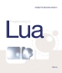

This book is a detailed and authoritative introduction to all aspects of Lua programming written by Lua's chief architect.
Programming in Lua gives a solid base for any programmer who wants to use Lua. It covers all aspects of Lua—from the basics to its API with C—explaining how to make good use of its features and giving numerous code examples. The book is targeted at people with some programming background, but it does not assume any prior knowledge about Lua or other scripting languages.
When you buy a copy of this book, you help to support the Lua project.
For the official definition of the Lua language, see the reference manual.
Programming in Lua
by Roberto Ierusalimschy
Lua.org, January 2013
ISBN 859037985X
The third edition is aimed at Lua 5.2 and can be used with Lua 5.1. It brings substantial new material. All chapters include exercises, ranging from simple questions about the language to full small-size projects.
The book is available at the main online stores, such as the Lua Bookstore at Amazon and also as an e-book.
Programming in Lua
by Roberto Ierusalimschy
Lua.org, March 2006
ISBN 8590379825
The second edition was aimed at Lua 5.1 and remains quite relevant for Lua 5.2.
The book is still available at the main online stores, such as the Lua Bookstore at Amazon.
It is also available in German, Korean, Chinese, and Japanese.
 Programming in Lua
by Roberto Ierusalimschy
Lua.org, December 2003
ISBN 8590379817
The first edition was aimed at Lua 5.0 and remains largely relevant. It is available online.